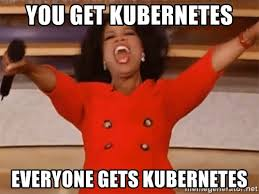
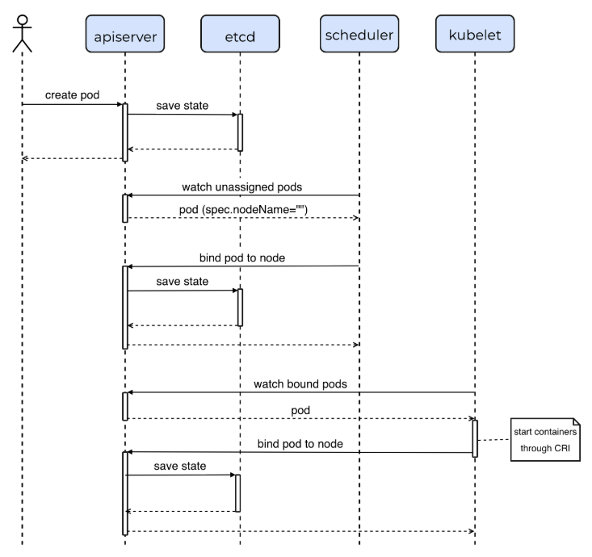

당신이 모르면 당하는 3가지 장애 Kubernetes의 Secret Recipe
Junho.son junho.son@linecorp.com Work at Line Dev, Ops, All about the Nucleo.
순풍에 돗 단듯 잘 나가던 kubernetes 
incidents teach you how to build a reliable system
제가 겪었던 등에 땀나는 상황을 여러분들이 겪지않고,
미리 대응할 수 있도록 공유하는 자리입니다.
만약 여러분들이 모두 겪은 일이라면…
아주 좋은 클러스터를 가지고 계시군요…
오늘은 이야기 하고 싶은 것들:
잘 동작하던 kubernetes 에서 아래의 에러가 발생한다.
$ kc apply -f deployment/app.yaml
etcdserver: mvcc: database space exceeded
$ kc scale --current-replicas=2 --replicas=3 deployment/nucleo-flask-sample -n junho-son
etcdserver: mvcc: database space exceeded증상
원인
Solutions
export PEERS="http://10.127.111.53:2379,http://10.127.114.99:2379,http://10.127.114.96:2379"
export ETCDCTL_API=3
# compaction
$ rev=$(etcdctl endpoint status --write-out="json" | egrep -o '"revision":[0-9]*' | egrep -o '[0-9]*')
$ etcdctl compact $rev
compacted revision 518729
# size 안 줄었음
| http://10.127.111.53:2379 | 750655cd04e8a0f0 | 3.2.15 | 2.1 GB | false | 4 | 578868 |
| http://10.127.114.99:2379 | 77c94c09da32ea5a | 3.2.15 | 2.2 GB | true | 4 | 578868 |
| http://10.127.114.96:2379 | 7fa913847ab8f9f5 | 3.2.15 | 2.1 GB | false | 4 | 578868 |
# defragment(resize high watermark)
$ etcdctl --endpoints ${PEERS} defrag
Finished defragmenting etcd member[http://10.127.111.53:2379]
Finished defragmenting etcd member[http://10.127.114.99:2379]
Finished defragmenting etcd member[http://10.127.114.96:2379]
# size 줄었음
| http://10.127.111.53:2379 | 750655cd04e8a0f0 | 3.2.15 | 9.7 MB | false | 4 | 582117 |
| http://10.127.114.99:2379 | 77c94c09da32ea5a | 3.2.15 | 9.7 MB | true | 4 | 582117 |
| http://10.127.114.96:2379 | 7fa913847ab8f9f5 | 3.2.15 | 9.7 MB | false | 4 | 582117 |Solutions
etcdctl --endpoints ${PEERS} alarm list
memberID:8631513766031452762 alarm:NOSPACE
memberID:8432521691336843504 alarm:NOSPACE
etcdctl --endpoints ${PEERS} alarm disarm
memberID:8631513766031452762 alarm:NOSPACE
memberID:8432521691336843504 alarm:NOSPACELessons Learned
kube-apiserver compaction options(default: 5m)
--etcd-compaction-interval duration Default: 5m0s
The interval of compaction requests. \
If 0, the compaction request from apiserver is disabled.Lessons Learned
scheduled defrag job
#!/bin/bash
# start with random sleep
sleep $((RANDOM % 10 + 1))
CMD=$(which etcdctl)
ENDPOINT=$(cat /etc/etcd/etcd.conf | grep "ETCD_ADVERTISE_CLIENT_URLS" | cut -d"=" -f2 | tr -d "\"")
LOG="/var/log/etcd-defrag-$(date +"%Y%m%d")"
ETCDCTL_API=3 ${CMD} --endpoints http://127.0.0.1:2379 \
defrag --command-timeout=60s 1>>${LOG} 2>&1
ETCDCTL_API=3 ${CMD} --endpoints http://127.0.0.1:2379 \
endpoint status 1>>${LOG}
# delete log
find /var/log/etcd-defrag-* -maxdepth 1 -type f -ctime +7 -deleteRef: defrag using cronjob
Lessons Learned
adjust etcd db size
$ cat /etc/etcd/etcd.conf
...
ETCD_QUOTA_BACKEND_BYTES="4294967296"
...--quota-backend-bytes
Raise alarms when backend size exceeds the given quota (0 defaults to low space quota).
default: 0
env variable: ETCD_QUOTA_BACKEND_BYTESLessons Learned
Monitoring
Each etcd server exports metrics under the /metrics path on its client port and optionally on locations given by --listen-metrics-urls.
# prometheus scrap options
scrape_configs:
- job_name: etcd
static_configs:
- targets: ['10.127.157.129:2379','10.127.157.133:2379','10.127.157.137:2379']# prometheus query
etcd_debugging_mvcc_db_total_size_in_bytes
etcd_debugging_mvcc_keys_total
etcd_debugging_mvcc_slow_watcher_total
...Ref: prometheus scrap
Lessons Learned
Backup
#!/bin/bash
BACKUP_DIR="/var/backup/etcd"
ENDPOINT=http://127.0.0.1:2379
BACKUP_FILE="${BACKUP_DIR}/$(date +'%y%m%d').db"
mkdir -p ${BACKUP_DIR}
ETCDCTL_API=3 etcdctl --endpoints=${ENDPOINT} snapshot save "${BACKUP_FILE}"
cd ${BACKUP_DIR} && etcdctl backup --data-dir /var/lib/etcd/default.etcd
sleep 1
# move member dir
mv ${BACKUP_DIR}/member ${BACKUP_DIR}/member-$(date +'%y%m%d')
# cleanup backup older than 7 days
find /var/backup/etcd -maxdepth 1 -type f -ctime +7 -delete
find /var/backup/etcd/member-* -maxdepth 0 -type d -ctime +7 -exec rm -r /"{}/" \;Ref: backup and restore
어느날 갑자기 kubectl로 조회가 불가능 하고,
node가 하나 둘씩 NotReady가 되기 시작한다.
$ kc get pods
Unable to connect to the server: x509: certificate is valid
# apiserver log
E0709 10:55:24.437376 1 authentication.go:62] Unable to authenticate the request due to an error: \
[x509: certificate has expired or is not yet valid, x509: certificate has expired or is not yet valid]증상
Solutions
kubeadm init phase certs [master component]
## apiserver --cert-dir로 기존 ca cert로 생성해야 함(안하면 새롭게 ca cert생성)
kubeadm init phase certs all \
--apiserver-advertise-address 10.20.192.31 \
--apiserver-cert-extra-sans gonz-dev-caravan.devdev.com \
--service-cidr 172.28.0.0/15 --cert-dir /root/test_pki/pki 위에서 갱신한 내용으로 kubelet admin.conf 변경/배포
ansible-playbook -i inventory/service-dev/host renew_cert_node.ymlLessons Learned
맘편한게 짱! master component certification은,
그렇다면 kubelet은?
Lessons Learned
kubelet rotate-certification 기능 이용
--rotate-certificates=true 옵션 추가$ cat /etc/systemd/system/kubelet.service.d/10-kubeadm.conf
[Service]
...
Environment="KUBELET_CERTIFICATE_ARGS=--rotate-certificates=true --cert-dir=/var/lib/kubelet/pki"
Environment="KUBELET_FEATURE_GATE_ARGS=--feature-gates=RotateKubeletClientCertificate=true,RotateKubeletServerCertificate=true"Lessons Learned
kubelet rotate-certification
## 과정은 말로 설명... 필요?
ls -l /var/lib/kubelet/pki/
total 32
-rw------- 1 root root 1183 Jun 25 18:05 kubelet-client-2018-06-25-18-05-21.pem
-rw------- 1 root root 1183 Jun 25 18:46 kubelet-client-2018-06-25-18-46-17.pem
...
lrwxrwxrwx 1 root root 59 Jun 25 18:46 kubelet-client-current.pem -> /var/lib/kubelet/pki/kubelet-client-2018-06-25-18-46-17.pem
# kubelet log
Jun 26 17:04:27 junho003-k8s-dev-jp2v-dev kubelet[12771]: I0626 17:04:27.206702 12771 transport.go:96] certificate rotation detected, shutting down client connections to start using new credentials
# kubelet config
$ cat /etc/kubernetes/kubelet.conf
...
users:
- name: default-auth
user:
client-certificate: /var/lib/kubelet/pki/kubelet-client-current.pem
client-key: /var/lib/kubelet/pki/kubelet-client-current.pemLessons Learned
이런거 관리하기 너무 힘들다… kops(on aws), kubespray 사용하시면… 편할수 있습니다.
large cluster를 만들고(node 1000), 서비스 배포(nginx - replica 5000)시 pod의 scheduling이 너무 느리다 세월아 네월아…
증상
Solutions
kube-scheduler에서 percentageOfNodeToScore 옵션 조정
# cat schedulerconfig.yaml
...
percentageOfNodesToScore: 10
...뭐요?
Lessons Learned
k8s pod scheduling

Ref: k8s custom scheduler Ref: kubernetes scheduling
Lessons Learned
Scheduler Performance Tuning
Lessons Learned
Scheduler Performance Tuning
그런데 v1.14 부터 이 클러스터 사이즈를 이용하여 이 값을 계산하는 공식이 추가 됐다 하네요…
당신의 DNS는 안녕하십니까?
보통 dnsPolicy: clusterFirst 설정
만약 db를 사용하는 java spring service 들이 동시에 100개 이상 배포된다면? -> dns pod들이 죽어나가면서, service pod들이 CrashloopbackOff… -> 난 봤어… 그 잔인한 모습을… 서로가 서로를 죽이는… 그 모습은 마치
증상
Solutions
걱정하지 마시고 cluster-proportional-autoscaler 한대 들이세요…
아니면, Pod .spec.dnsConfig를 이용하여 ndots 옵션을 수정
...
spec:
containers:
- command:
- /cluster-proportional-autoscaler
- --namespace=kube-system
- --configmap=coredns-autoscaler
- --target=deployment/coredns # 자신의 cluster dns target
- --default-params={"linear":{"coresPerReplica":256,"nodesPerReplica":16,"preventSinglePointFailure":true}}
- --logtostderr=true
- --v=2
image: k8s.gcr.io/cluster-proportional-autoscaler-amd64:1.2.0
...default param의 coresPerReplica, nodesPerReplica 값으로 적절한 pod의 개수를 계산한 후 dns deploy 값을 조정합니다.
replicas = max( ceil( cores * 1/coresPerReplica ) ,
ceil( nodes * 1/nodesPerReplica ) )ndots 3개 미만이면, upstream dns를 보게 조정(absoulute name)
apiVersion: v1
kind: Pod
metadata:
namespace: default
name: example
spec:
containers:
- name: test
image: nginx
dnsConfig:
options:
- name: ndots
value: "3"필요성
증상
사용자가 504 gateway timeout 에러 확인 kibana를 확인해 보니 15:38~15:41사이에 ingress 한 장비에서 503(4000건) 504(15건) 발생 해당 장비에 nginx 프로세스 확인해보니 다른프로세스와 생성시간이 많이 차이나는 프로세스 확인 (reload 하지 못한 프로세스가 생김)
$ ps -ef | grep nginx
65534 10022 131013 0 15:37 ? 00:00:57 nginx: worker process <-
65534 11562 131013 1 15:38 ? 00:01:43 nginx: worker process <-
65534 62933 131013 0 17:41 ? 00:00:00 nginx: worker process
65534 62934 131013 0 17:41 ? 00:00:00 nginx: worker process
65534 62935 131013 0 17:41 ? 00:00:00 nginx: worker process
# 해당 프로세스 SIGTERM(kill -15) 로 죽인 후 위 에러 발생안함로그 확인해 보니 부하테스트가 있었고, backend pod은 hpa로 확장 됐으나, nginx는 그 이후 이상 프로세스가 되고 정상 동작 하지 못함
동일 ip로 높은 부하가 오는 상황(DDos)을 막기 위한 nginx 튜닝 metadata.annotation에 아래의 값 조정
nginx.ingress.kubernetes.io/limit-connections(개수) :
# 하나의 ip에서 허용되는 동시 연결 개수 -> limit_conn
nginx.ingress.kubernetes.io/limit-rps(개수) :
# 매초당 주어진 ip에서 부터 허용되는 연결의 수 -> limit_req
nginx.ingress.kubernetes.io/limit-rpm(개수) :
# 매분당 주어진 ip에서 부터 허용되는 연결의 수 -> limit_reqapiVersion: extensions/v1beta1
kind: Ingress
metadata:
annotations:
...
'nginx.ingress.kubernetes.io/limit-connections' : '300',
'nginx.ingress.kubernetes.io/limit-rpm' : '3500',
'nginx.ingress.kubernetes.io/limit-rps' : '500',
...필요성
QoS 분류 및 설정
Resource
동작방식
kubernetes는 QoS 별로 OOM_SCORE_ADJ를 다르게 설정하여 linux oom kill 우선순위를 조정합니다.
# 값이 1000에 가까울수록 oom kill 대상
-1000 <= OOM_SCORE_ADJ <= 1000BestEffort
OOM_SCORE_ADJ: 1000Burstable
2<OOM_SCORE_ADJ<999,
min(max(2, 1000 - (1000 * memoryRequestBytes) / machineMemoryCapacityBytes), 999))Guaranteed
OOM_SCORE_ADJ:-998kubelet, docker는 OOM_SCORE_ADJ; -999
OOM_SCORE_ADJ 값을 확인하고 싶을때는…
docker inspect CONTAINERID | grep -i oom
cat /proc/PID/oom_score_adj필요성
SSD 서버가 없다면…? ETCD 이중화를 위해 노드를 다른 zone에 두고 싶다면… 아래와 같은 warn이 etcd에서 자주 발생한다면…
2017-04-12 03:04:09.678778 W | etcdserver: \
failed to send out heartbeat on time \
(deadline exceeded for 185.938874ms)disk(SSD권장) file I/O와 network latency를 고민 물리적인 교체가 당장 힘들다면 etcd tuning
Let’s get some tune
heartbeat interval : leader가 follow에게 자신의 리더임을 알리는 주기(default: 100ms) election timeout : follower가 leader 선출을 하기 전까지 기다리는 시간(default: 1000ms)
heartbeat interval
너무 작으면 자주 보내서 cpu/network resource 많이 사용 너무 크면 leader fail을 늦게 감지
Guide: member들 간 평균 round-trip time(using ping) 평균의 max
election timeout
Guide: rrt의 최소 10배 이상
$ cat /etc/etcd/etcd.conf
[member]
...
ETCD_HEARTBEAT_INTERVAL="500"
ETCD_ELECTION_TIMEOUT="3000"만약 disk의 metric을 보려면…
## disk
etcd_disk_wal_fsync_duration_seconds < 10ms
etcd_disk_backend_commit_duration_seconds < 25ms필요성
server process에게 시작할 시간을 주자
java spring process의 경우 server port가 LISTEN 이어도 server initializing 하는 시간이(DB 접속 등) 필요하다.
$ cat nucleo/app.yml
...
# Initial Delay Second(default: 30s)
# If you need to more than 30 sec to initialize your server process.
initial_delay: 60
# Health check path(default: /)
# if you don't want to send health checking request on root path(/).
# Important! App have to exist a path you specify.
health_path: /healthz$ kc get pod \
nucleo-flask-sample-371dac7-default-68f5674455-jnh6n -n junho-son -o yaml
...
livenessProbe:
failureThreshold: 3
httpGet:
path: /healthz
port: 8080
scheme: HTTP
periodSeconds: 10
initialDelaySeconds: 60
...필요성
spec.revisionHistoryspec.[activeDeadlineSeconds | backoffLimit]spec.[successfulJobsHistoryLimit(3) | failedJobsHistoryLimit(1)]helm init --history-max 10적용
## deploy revisionHistory
$ kc get deployment -n junho-son meister-f778746-default -o yaml
apiVersion: extensions/v1beta1
kind: Deployment
...
spec:
progressDeadlineSeconds: 600
replicas: 3
revisionHistoryLimit: 3
...
## batch job
$ kc get job -n junho-son block-junho-son-mysql-dev-my-mysqldump-1547071200 -o yaml
apiVersion: batch/v1
kind: Job
...
spec:
backoffLimit: 1
## install tiller
$ helm init --history-max 10필요성
중요한 서비스에 우선순위를 매겨, 먼저 스케줄링 되게 한다.
priorityclass별 Quota 지정가능(v1.13 beta)
동작방식
$ kc get pc
NAME VALUE GLOBAL-DEFAULT AGE
system-cluster-critical 2000000000 false 135d
system-node-critical 2000001000 false 135d
$ kc get pod --all-namespaces -o \
jsonpath='{range .items[*]}{.metadata.name}{"\t"}{.spec.priorityClassName}{"\n"}{end}'
kube-apiserver-junho-devel001 system-cluster-critical
kube-apiserver-junho-devel002 system-cluster-critical
kube-apiserver-junho-devel003 system-cluster-critical동작 방식 - 스케줄링
특징
type PodSpec struct {
...
PriorityClassName string
Priority *int32 // Populated by Admission Controller. Users are not allowed to set it directly.
}type PriorityClass struct {
metav1.TypeMeta
// +optional
metav1.ObjectMeta
// The value of this priority class. This is the actual priority that pods
// receive when they have the above name in their pod spec.
Value int32
GlobalDefault bool
Description string
}테스트
목적
priority class 생성
$ kc get priorityclass
NAME VALUE GLOBAL-DEFAULT AGE
bustable 1000 false 2s
guaranteed 900000000 false 2s
system-cluster-critical 2000000000 false 23d
system-node-critical 2000001000 false 23dQuota 생성 및 priorityclass 지정
$ cat namespace-quota.yaml
---
apiVersion: v1
kind: Namespace
metadata:
name: test-quota1
---
apiVersion: v1
kind: List
items:
- apiVersion: v1
kind: ResourceQuota
metadata:
name: pods-guaranteed
namespace: test-quota1
spec:
...
scopeSelector:
matchExpressions:
- operator : In
scopeName: PriorityClass
values: ["guaranteed"]
- apiVersion: v1
kind: ResourceQuota
metadata:
name: pods-bustable
namespace: test-quota1
spec:
...
scopeSelector:
matchExpressions:
- operator : In
scopeName: PriorityClass
values: ["bustable"]deployment 배포
# deployment for guaranteed
$ cat test-deployment.yaml
apiVersion: apps/v1
kind: Deployment
metadata:
name: nginx-deployment-on-guaranteed
namespace: test-quota1
labels:
app: nginx
spec:
replicas: 3
...
spec:
...
priorityClassName: guaranteed # priority 지정
# deployment for bustable
$ cat test-deployment-bustable.yaml
apiVersion: apps/v1
kind: Deployment
metadata:
name: nginx-deployment-on-bustable
namespace: test-quota1
labels:
app: nginx2
spec:
replicas: 3
...
spec:
...
priorityClassName: bustable # priority 지정배포
$ kc create -f namespace-quota.yaml
$ kc create -f test-deployment-guaranteed.yaml
$ kc create -f test-deployment-bustable.yaml
$ kc describe quota -n test-quota1
Name: pods-bustable
Namespace: test-quota1
Resource Used Hard
-------- ---- ----
cpu 3 10
memory 3Gi 10Gi
#-> bustable pod 3개 잡힘
Name: pods-guaranteed
Namespace: test-quota1
Resource Used Hard
-------- ---- ----
cpu 1500m 10
memory 1500Mi 10Gi
pods 3 20
#-> guaranteed pod 3개 잡힘지긋지긋한 node disk관리… 이젠 GC로 해결
필요성
동작방식
image collection
container collection
어떻게 적용했나 - kubelet options
apiVersion: kubelet.config.k8s.io/v1beta1
...
imageGCHighThresholdPercent: 85
imageGCLowThresholdPercent: 70
imageMinimumGCAge: 2m0s
maxContainer: -1
maxPerPodContainer: 1 # Crashloopbackoff시 log -p 옵션을 위한 설정
...Ref: kubelet GC
하지만, 곧 deprecated 된다고 하네요…
# 기존의 옵션이 사라지고, 이런식으로...
EvictionHard
nodefs.available<15%
EvictionSoft
nodefs.available<25%
imagefs.available<25%필요성
근데 그냥 .spec.container.cmd를 서버프로세스 실행 명령어로 바꾸면 안됨? 맞아요… 그게 제일 간단합니다. 그리서 우리도 그걸로 바꾸려고요.
필요성
처음엔 system 영역의 리소스를 확보하고자 했다. 하지만…
동작방식
Node의 capacity는 위 처럼 구성
* kube-reserved: kubelet, container runtime, npd * system-reserved: linux processes, sshd * eviction-threshold: 앞에서 설명한 * allocatble: node가 pod의 스케줄링을 위한 resource
2개의 reserved와 threshold를 지정하지 않으면 전체 노드 리소스가 allocatable
우리의 설정
$ kc describe node [Nodename]
...
Allocatable:
cpu: 40
ephemeral-storage: 857955043546
hugepages-1Gi: 0
hugepages-2Mi: 0
memory: 65582228Ki
pods: 110
...
$ cat /var/lib/kubelet/config.yml
evictionHard:
imagefs.available: 15%
memory.available: 100Mi
nodefs.available: 10%
nodefs.inodesFree: 5%왜? kube-reserved, system-reserved는 하지 않죠?
하… 근데 이게 문제인게…
link: node v1 api doc link: pod eviction link: reserve resource